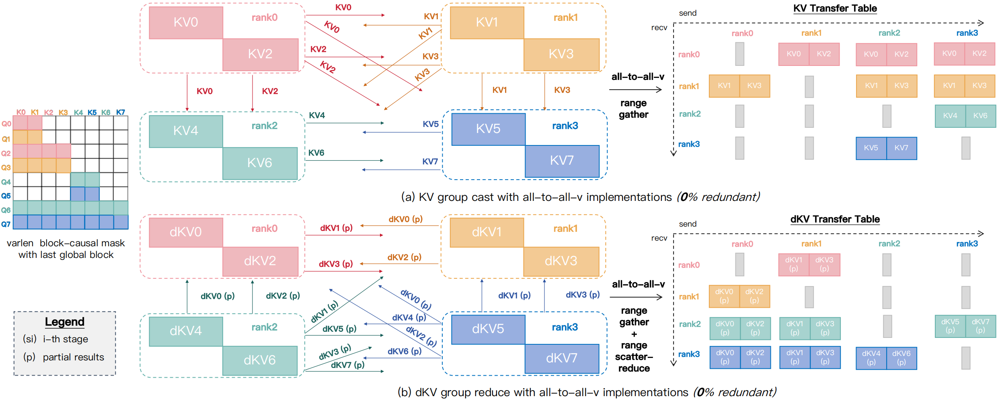
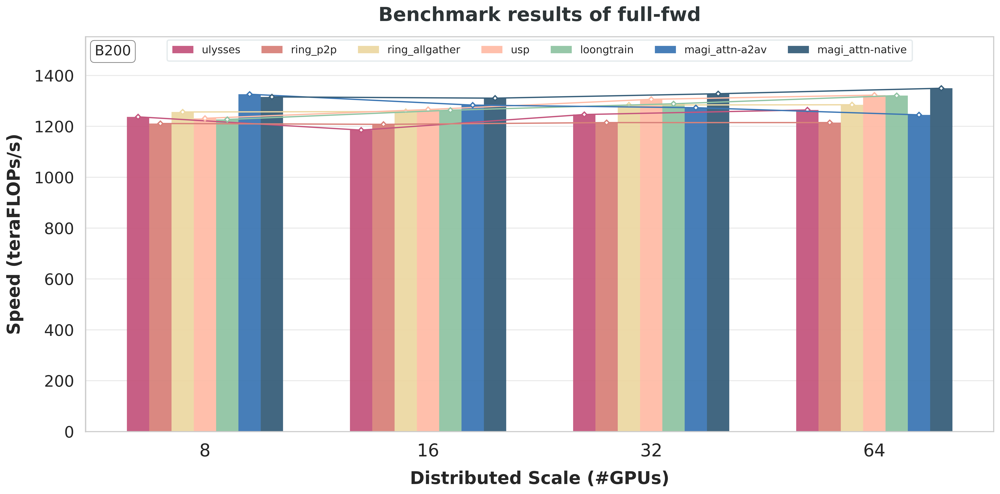

Support Native Group Collective#
Introduction#
With the release of MagiAttention-v1.1.0, we are excited to announce the support for native group collective CUDA kernels for both intranode and internode communication, based upon the amazing work of DeepEP [Zhao et al., 2025].
Compared to the original AlltoAll-v implementation, this new approach:
eliminates the extra D2D copies by fusing the pre-/post-processing into the communication kernel itself;
supports native “cast” / “reduce” semantics by allowing a single send / recv buffer to be sent to / reduced from multiple peers;
decreases communication overhead over low-bandwidth
RDMAby de-duplicatingRDMAtransfers and shifting toNVLink, thus significantly improving communication efficiency and scalability, particularly for large hierarchical CP groups spanning internode and intranode peers.
User Interface#
Installation#
Installing MagiAttention with native group collective support is straightforward. You can follow the standard installation process in the Installation Guide, and the native group collective kernels will be included and built by default, considering your specific GPU architecture and CUDA version automatically.
However, to enable the internode features, you need to ensure that IBGDA is properly set up on your bare-metal host machine, which is a prerequisite for utilizing the native group collective kernels when cp_size > 8 as the communication backend. Please refer to the Installation Guide for detailed instructions on how to enable IBGDA and verify its functionality.
Enabling#
To enable the native group collective kernels in MagiAttention, you can simply set the environment variable MAGI_ATTENTION_NATIVE_GRPCOLL=1.
API#
Within MagiAttention itself, you don’t have to worry about the underlying communication kernels at all, but we will provide a low-level API for users who want to directly utilize the group collective kernels for their scenarios involving non-trivial communication patterns.
That’s because we believe that, the group collective primitives are general enough to cover all common communication patterns, thus can be widely used and extended beyond the attention mechanism in modern distributed training scenarios.
Todo
Stay tuned for the upcoming release of the low-level API for group collective kernels, which will be available in the near future.
Implementation#
Limitations of AlltoAll-v Implementation#
Initially, since no existing communication kernels support group collectives, we implemented GroupCast and GroupReduce on top of AlltoAll-v as a prototype, achieving zero-redundant communication in forward and backward passes (see Fig. 60 below).
{kind=link}

Fig. 60 Illustration of GroupCast/GroupReduce primitives implemented atop AlltoAll-v to achieve zero redundancy, shown using the varlen block-causal mask with the last global block. (a) For forward and backward passes, GroupCast builds a transfer table for \(\mathrm{KV}\) send/receive buffers, invokes AlltoAll-v, and uses a custom Range-Gather kernel for pre-/post-processing. (b) In the backward pass, GroupReduce aggregates partial \(\mathrm{dKV}\) via AlltoAll-v, employing Range-Gather for pre-processing and Range-Scatter-Reduce for post-processing.#
However, this design introduces extra pre-/post-processing: GroupCast must re-permute inputs for AlltoAll-v and restore outputs (Range-Gather), and GroupReduce further reduces outputs (Range-Scatter-Reduce). Even with optimized Triton kernels, these steps add non‑negligible D2D overhead that can impact end-to-end performance.
Beyond the D2D cost, AlltoAll-v permits only a single send/recv buffer pair per peer pair and does not natively support “cast” semantics. As a result, sending a tensor from one rank to a subset of peers of size \(m\) requires allocating \(m\) separate send buffers and transferring them independently, even though the data are identical. This duplication not only leads to much larger intermediate memory usage, but also, causes substantial communication overhead, especially when the CP group spans internode peers over RDMA, where bandwidth is significantly lower than intranode NVLink, becoming a critical bottleneck when cp_size scales.
Similarity to DeepEP Dispatch/Combine#
Almost at the same time, the DeepEP team released their work [Zhao et al., 2025] on native kernel implementation of Dispatch / Combine communication primitives specific for expert parallelism (EP) scenarios, replacing the traditional AlltoAll-v-based implementation with similar pre-/post-processing overhead and RDMA transfer duplication issues.
Inspired by their work, we implemented native GroupCast / GroupReduce leveraging the same underlying kernel design of DeepEP’s Dispatch / Combine respectively and extended it for specific attention communication patterns and beyond.
Kernel Design of Native Group Cast#
Specifically, as for GroupCast, we logically chunk the input buffer along the seqlen dimension into several input_splits, each containing the size of the split as well as the list of desination peers named dst_indices.
For each input_split, one sender SM (as a producer) will load it once from the global memory to shared memory via TMA, and assigns one warp to send it into the recv buffer of per destination peer via either NVLink or RDMA.
On the receiving side, each receiver SM (as a consumer) will wait for its recv buffer to be filled by one unique sender, from which it assigns a warp to load into shared memory and then store to the corresponding output_split in the output buffer via TMA, indicated by the list of source peers (named src_index) for all output_splits.
Kernel Design of Native Group Reduce#
As for GroupReduce, the kernel design is similar to GroupCast but with an additional reduction step on the receiving side.
First of all, a sender SM (as a producer) will load one of its respective input_splits from the global memory to shared memory via TMA, and assign a warp to send it into the recv buffer of the unique destination peer to be reduced to via either NVLink or RDMA, indicated by the list of destination peers (named dst_index) for all input_splits.
Then on the receiving side, each receiver SM (as a consumer) will wait for its recv buffer to be filled by all senders who require to reduce to the same output_split, indicated by the list of source peers (named src_indices) for each output_split.
And then it assigns a warp to load into registers and perform reduction (e.g., sum) across the received partial results from multiple source peers, before storing the reduced result (firstly to the shared memory buffer and then) to the corresponding output_split in the output buffer via TMA.
RDMA Transfer De-duplication#
The kernel designs described above simplify a lot about the actual detailed data transfer flow, which involves complicated warp-specialized scheduling, multi-level of producer-consumer pairs and multi-scope of fence / synchronization to ensure correct memory visibility and support arrive-release semaphore signaling. But to explain the optimization of RDMA transfer de-duplication, we still have to dive a little bit into the details.
Following the original kernel design of DeepEP’s Dispatch / Combine for its so-called normal mode, the communication spanning internode and intranode peers is performed in a two-stage manner for both GroupCast and GroupReduce:
For
GroupCast, if someinput_splitneeds to cast to \(k\) internode destination peers within the same node:The
senderSM (as a producer) will not directly assign \(k\) warps to send to each of them peer-to-peer viaRDMA, instead, it only assigns a single warp (calledRDMA sender) to send it from itsRDMA send bufferto theRDMA recv bufferof the peer sharing the same local rank id within the destination node.Accordingly, one warp (called
RDMA2NVL transferer) on that peer will wait for itsRDMA recv bufferto be filled (as a consumer) by theRDMA sender, and then re-transfer it (as a producer) to theNVL recv buffersof that \(k\) actual destination peers viaNVLink.Each of their certain warp (called
NVL receiver) finally stores to their correspondingoutput_split(as a consumer), thus de-duplicating one’sRDMAtransfers \(k\) times by shifting toNVLinktransfers in desination nodes.
For
GroupReduce, if someoutput_splitneeds to be reduced from \(k\) internode source peers within the same node:Each of those \(k\)
senderSMs (as a producer) will not directly assign a warp to send its respectiveinput_splitpeer-to-peer viaRDMA, instead, they each only assign a single warp (calledNVL sender) to send to theNVL recv bufferof the peer sharing the same local rank id with that destination one within the same source node viaNVLink.Accordingly, one warp (called
NVL2RDMA transferer) on that peer will wait for itsNVL recv bufferto be filled (as a consumer) by all thoseNVL senders, and then perform a local reduction of these partial results before re-transferring the locally reduced result (as a producer) to theRDMA recv bufferof that destination peer viaRDMA.One certain warp (called
RDMA receiver/reducer) on that destination peer finally performs global reduction across all those received locally-reduced results from multiple source nodes and stores the globally-reduced result to the correspondingoutput_split(as a consumer), thus decreasingRDMAtransfers \(k\) times by shifting toNVLinktransfers in each source node.
Other Features and Optimizations#
Besides the core design described above, we also implemented several other features and optimizations in the native group collective kernels, some of which are specific for attention while others for general cases usage, including but not limited to:
Support multiple data types, comm dtypes and reduce dtypes: we extend the data dtype to cover
{float16, float32, float64}besides thebfloat16dtype supported in DeepEP, whosecomm_dtypeandreduce_dtypecan be configured separately (e.g.,float32reduce forbfloat16input orbfloat16transfer forfloat32input) to improve the reduction precision or transfer efficiency.Support multiple reduce ops with lse transfer: we extend the reduction ops to cover
{sum, avg, lse}besides thesumop supported in DeepEP, wherelse(log-sum-exp) reduction is a specific reduction pattern of modern softmax-based attention introduced byFlash-Attention[Dao et al., 2022]. Accordingly, we support transferinput/output lsealong withinput/output datato perform thelsereduction within the kernel.Support accumulative output buffer and fully avoid GPU-CPU sync: different than EP, the seqlen of received buffer can be pre-calculated and used to pre-allocate buffers, thus we can pass in the output buffer which the kernel will directly reduce to it, and fully avoid GPU-CPU synchronization in static attention scenarios (but might not work for dynamic scenarios like sparse attention).
Support flexible cp size: for intranode group collective, we support arbitrary
cp_sizefrom \(1\) to \(8\) instead of onlycp_size=8in DeepEP, which is more flexible for different training scenarios. However, for internode group collective, the intranode size can still only be \(8\) for now but the internode size supports \(\{2,4,8,16,32\}\).Support packed transfer for multiple sets of data: we support transfer different sets of data (e.g., \(\mathrm{K}\) and \(\mathrm{V}\) in attention) together sharing the same communication pattern, without the need to launch separate kernels for each of them, or manually pack them into a single buffer and then unpack after transfer, by simply passing in multiple sets of input and output buffer pairs with a single set of meta information like
input_splitsandoutput_splits.
Experiments#
We present representative distributed-level benchmarks below for the most commonly used varlen causal mask on both H100 and B200 GPUs, showcasing MagiAttention’s performance and scalability versus other leading CP strategies for both AlltoAll-v and native backend, particularly highlighting the performance gain of native group collective kernels when cp_size > 8 and continues to scale.
For detailed benchmark settings and more benchmarking results, see the separate blog post.
Kernel Level#
Todo
Stay tuned for the upcoming release of the kernel-level benchmarks, which will provide a more fine-grained analysis of the performance improvements brought by the native group collective kernels, including detailed profiling and breakdown of communication overheads.
Distributed Level#
H100#
{kind=link}

Fig. 61 (a) Forward Pass#

Fig. 62 (b) Backward Pass#
Benchmarking MagiAttention’s performance and scalability against baselines on H100 for the varlen causal mask.
B200#

Fig. 63 (a) Forward Pass#

Fig. 64 (b) Backward Pass#
Benchmarking MagiAttention’s performance and scalability against baselines on B200 for the varlen causal mask.
Citation#
If you find MagiAttention useful in your research, please cite:
@misc{magiattention2025,
title={MagiAttention: A Distributed Attention Towards Linear Scalability for Ultra-Long Context, Heterogeneous Mask Training},
author={Zewei, Tao and Yunpeng, Huang},
year={2025},
howpublished={\url{https://github.com/SandAI-org/MagiAttention/}},
}
References#
Tri Dao, Dan Fu, Stefano Ermon, Atri Rudra, and Christopher Ré. Flashattention: fast and memory-efficient exact attention with io-awareness. Advances in Neural Information Processing Systems, 35:16344–16359, 2022.
Chenggang Zhao, Shangyan Zhou, Liyue Zhang, Chengqi Deng, Zhean Xu, Yuxuan Liu, Kuai Yu, Jiashi Li, and Liang Zhao. Deepep: an efficient expert-parallel communication library. https://github.com/deepseek-ai/DeepEP, 2025.